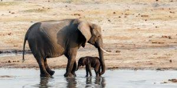
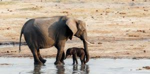

son animales vertebrados que se caracterizan porque la mayoría tienen pelos, cuatro patas y cola, aunque los mamíferos acuáticos tienen aletas y la piel desnuda. Su alimentación puede ser carnívora, herbívora u omnívora. Tienen cuatro extremidades. Todos respiran por pulmones. La temperatura de su cuerpo es constante. Su reproducción es sexual, con fecundación interna y las crías se desarrollan en el útero de la madre, por lo que son vivíparos, y cuando nacen reciben los cuidados de sus padres, siendo alimentados por la leche de sus madres. Sus mandíbulas son articuladas, permiten movimientos tanto en sentido horizontal como vertical por lo que pueden cortar y masticar. El esquema de su sistema nervioso es similar al resto de los vertebrados, pero ha tenido un desarrollo espectacular su encéfalo y su cerebro.
Animales
 
